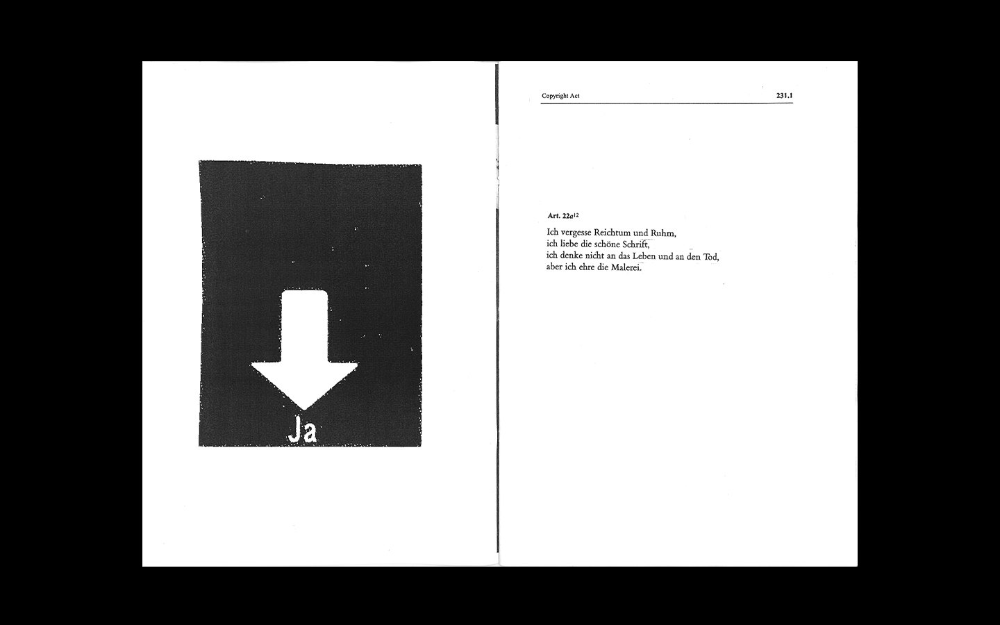
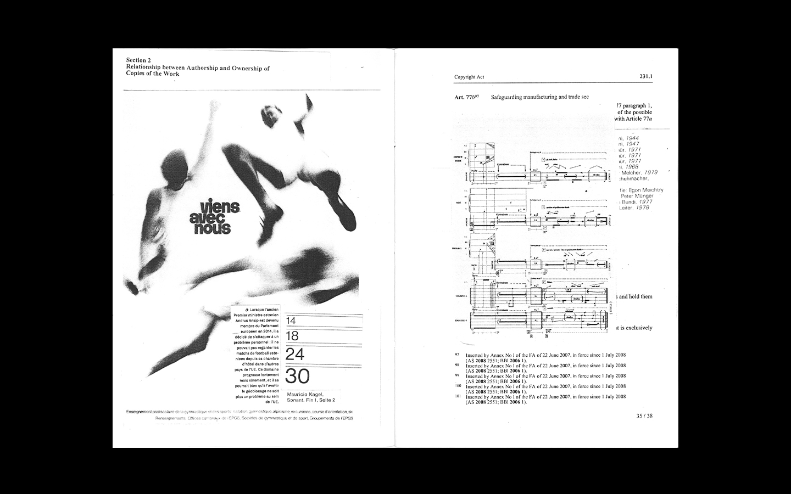
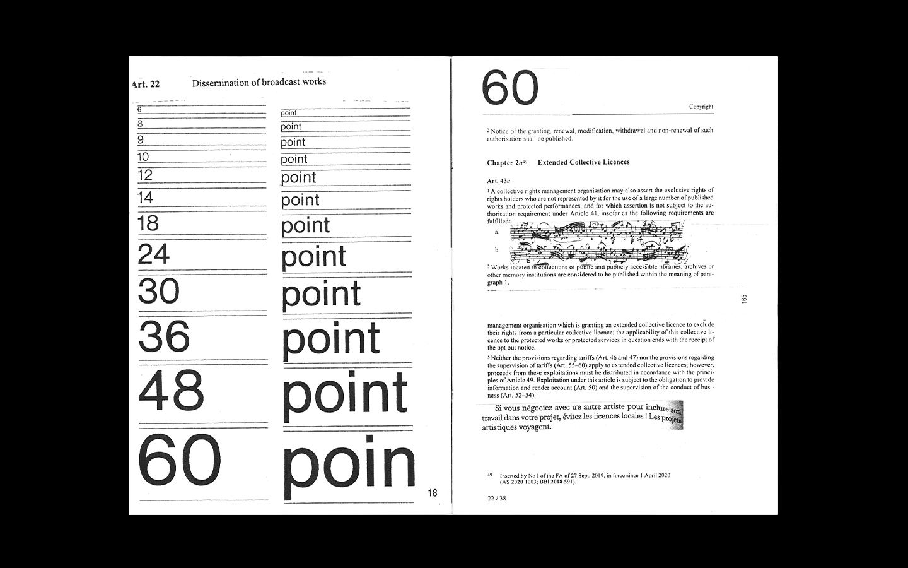
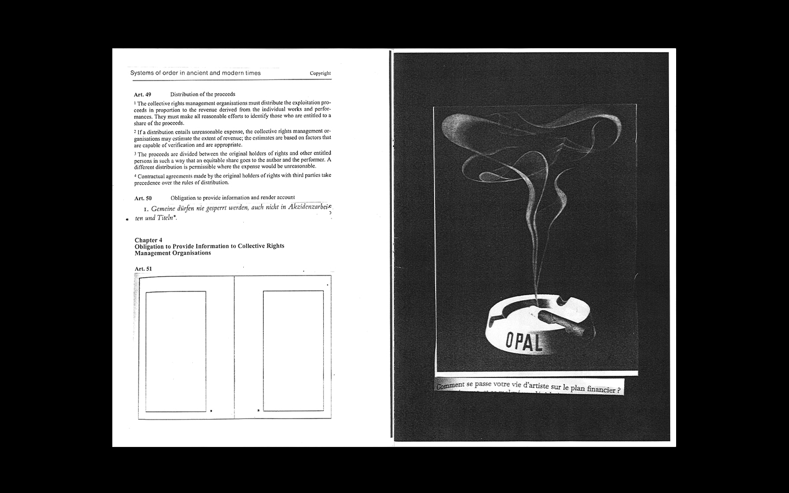
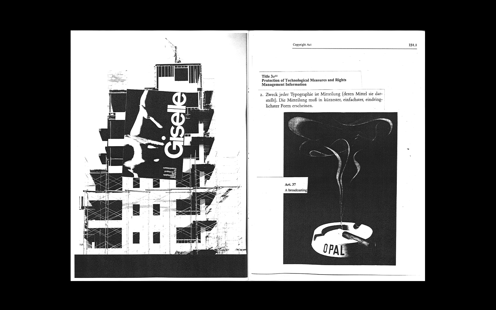
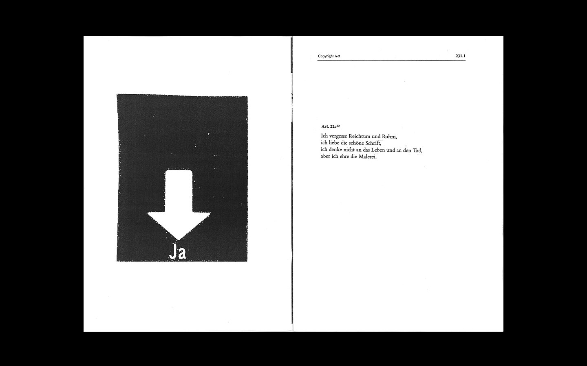
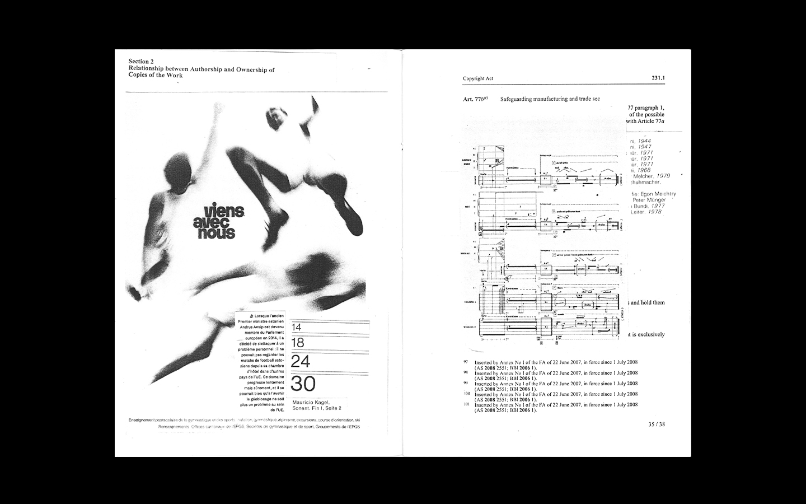
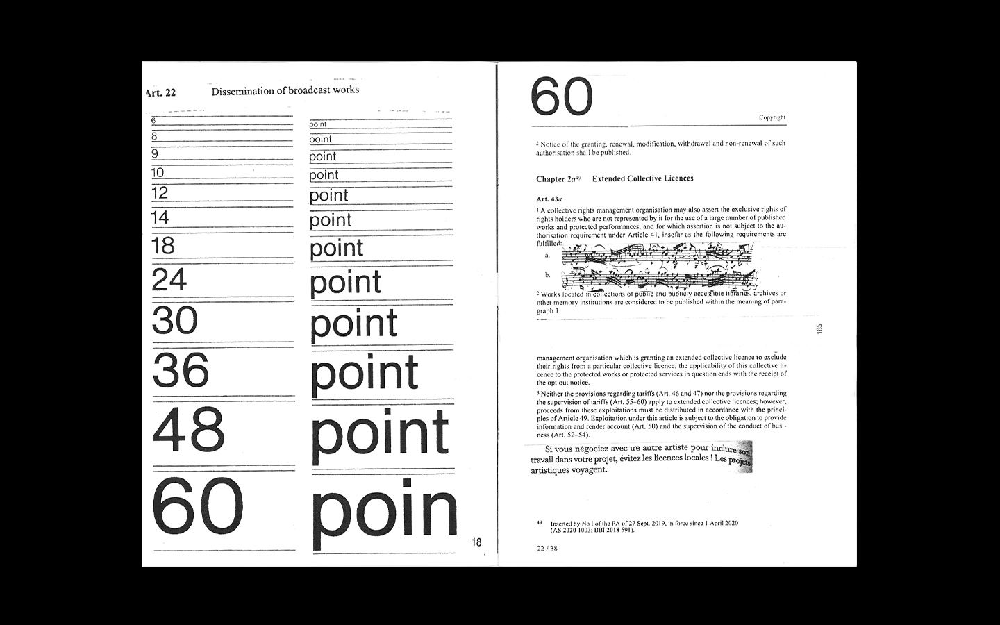
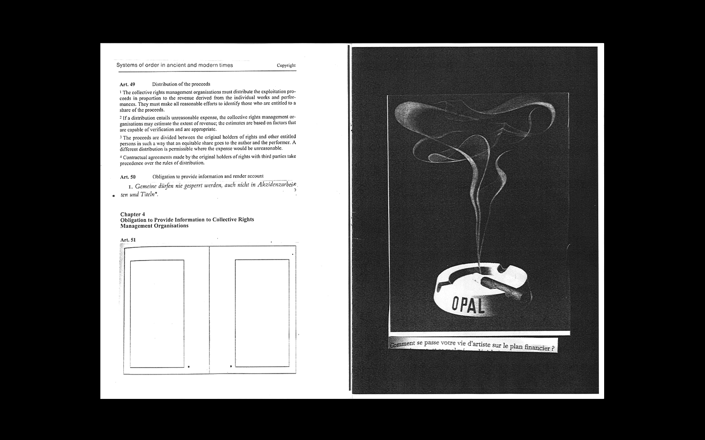
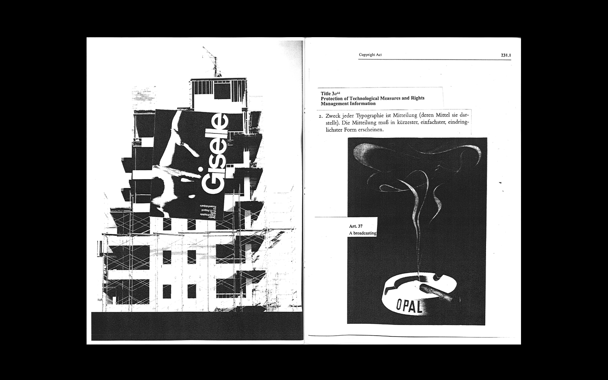

Remixing & Recontextualizing – Hacking existing content & styles (Zine Culture).
Disrupting Ownership – Questioning the concept of authorship & ownership by merging only borrowed sources.
Subversion – Bypassing / ignoring creative and legal constraints through copying.
Mocking Authority – Questioning (but also celebrating?) dogmatic approaches to copyright and design rules.
| What | Book (Process, Object, Copyright?) |
|---|---|
| Sources | Federal Act on Copyright and Related Rights Copiez ce livre, Eric Schrijver Grid Systems in Graphic Design, Josef Müller-Brockmann Schriften, 1925-1974, Jan Tschichold Das Schweizer Plakat. The Swiss Poster. L'affiche suisse. 1900 -1983 , Bruno Margadant |
| Tools | Copy machine, InDesign, Printer, Thread+Needle |
| Steps | 1. Borrow Books in Library, print Federal Act on Copyright(Google it); 2. Copy Pages; 3. Collaging to new meanings 4. Scan new Layouts 5. InDesign: Layout and Print Brochure 6. Assembling the Zine |
| Output | Zine |
 








